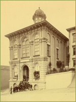

Creating a UC Dental Department
“We need a college of dentistry on this coast and if we have not a necessary talent among ourselves, we can import it. We owe those who take our places, greater facilities for study and professional breadth than the times have afforded us. The future will demand men educated in all that constitutes the scholar and professional man, and refined in all that makes the gentleman.”
Dr. CC Knowles, June 26, 1870
Dr. CC Knowles, June 26, 1870
The same impulse that prompted physicians and pharmacists to organize, standardize, and regulate their professions motivated a group of the city’s leading dentists to call for creation of a professional dental school. S.W. Dennis, M.D., D.D.S., was typical of this group of early organizers. He had graduated from the medical department of the University of Pennsylvania, received an honorary D.D.S. degree from the Indiana Dental College, and began practice in San Francisco after studying with a local dentist. In the midst of general lobbying for a school of dentistry, Dr. Dennis contacted colleagues at Harvard and the University of Pennsylvania to help plan for a dental college in San Francisco.

S. W. Dennis, M.D., DDS.
The Regents responded favorably, and in September of 1881 they established a Dental College to be organized with seven professors, nine instructors and four demonstrators. The eight members of the Dental Class of 1882 took courses of instruction in anatomy, physiology, chemistry and surgery alongside medical students in the Toland Medical College building at the corner of Stockton and Francisco Streets. A dental clinic was also located there and dental students were invited to attend selected bedside teaching clinics given by the medical faculty. While the UC Dental Department was not the only dental school to be organized in San Francisco, its founding in the context of the state university placed it in the forefront of academic schools in the West.

Thus by 1882 the University of California had three affiliated colleges in San Francisco. Faculty salaries were paid by tuition and fees and the individual schools retained control over choice of faculty, but the Toland Medical College building was officially made the property of the university, and graduates of the schools wore university gowns at graduation. From the beginnings of affiliation, reciprocity in course offerings and programs was a feature of the three colleges: medical and dental students took anatomy and physiology side-by side, and all three schools allowed their graduates to expand their careers by matriculating in the other schools, with course credit allowed.
Toland Medical Building was the site of science instruction for the College of Pharmacy (in 1875-1876) and Dentistry (1882-1891) as well as the Medical School (1864-1898)
>> Trained Nurses for San Francisco
{% include footer.html %}